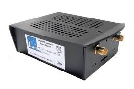
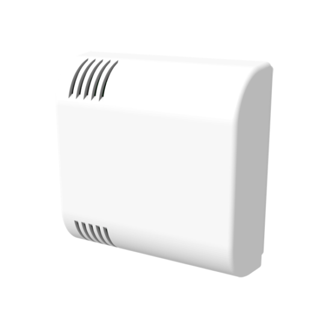
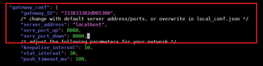

Project presentation
In order to conclude my engineering studies at the national school of advanced systems and network, ESISAR, I have realized a five-month internship at ATOS Worldgrid.
In an internet of things and Edge computing environment, the team I had the pleasure of being part of starting the second of March until the 31 of July,
works on an innovative solution called Atos Codex Smart Edge, that takes the notion of Industrial supervision to a higher level, integrating predictive analysis
and Edge & Swarm computing, the product allows a full-chain management and supervision, from the lowest level of sensors till the data processing on the cloud.
My internship came to further enrich this solution and test one of the Edge servers Atos created in 2019, the BullSequana Edge, with a LoRaWAN module.
The goal was setting up a LoraWan Network for temperature transmission, going through the study of the Lora network and its component, finding the corresponding lorawan network server,
installing it on the BullSequana, then making it into as Rancher module on the platform of Codex Smart Edge.
This project contains two parts:
The first one is the deployement of the network on a raspberry pi and the second part is the deployment on a more advanced hardware BullSequana Edge.
Project development
Hardware used
First part of the project
| 1Gate ATIM: Rasperry Pi 3 and Lora concentrator(SX1308 and SX1257 chips) |
 |
| Temperature sensor ACW-TH/W8 |
 |
| Ethernet cable |
| Keyboard |
| Screen |
Second part of the project
- BullSequana Edge: Lora concentrator(SX1308/SX1301 and SX125x chips)
- Laptop
- Temperature sensor ACW-TH/W8
Installation and Configuration
The OS used in both of the installations is Debian 10, there are no specific prerequesties.
LoraWan Server
The LoraWan Network Server (LNS) used for this project is Gotthardp's programmed in Erlang.
The installation instructions are detailed in the documentation in the .
Gateway and packet forwarder
For the Gateway part of the network, we need to install a driver for the Lora concentrator and the packet forwarder linking the server to the gateway.
The software used is the following:
First part of the project
First we need to enable the SPI interface on the RasperryPI using the following command:
Sudo raspi-config
to access the configuration menu then navigate to Interfacing options>SPI> enable:YES
then reboot the raspberry:
reboot
Install the packet Semtech driver:
git clone https://github.com/Lora-net/lora_gateway
Connect the driver to the Reset Pin Control (usually 25):
cd lora_gateway
./reset_lgw.sh start 25
then test that it's corretly installed:
./util_tx_test -r 1257 -f 867.9
Once the test is successful, make sure to stop it and move to installation of the packet forwarder:
git clone https://github.com/Lora-net/packet_forwarder
Update the local_conf.json file with the gateway's ID:
./update_gwid.sh local_conf.json
Then update the global_conf.json fil with the serevr's adress and the UDP ports:
nano global_conf.json

Launch the packet forwarder to test it:
./lora_pkt_fwd/lora_pkt_fwd
Second part of the project